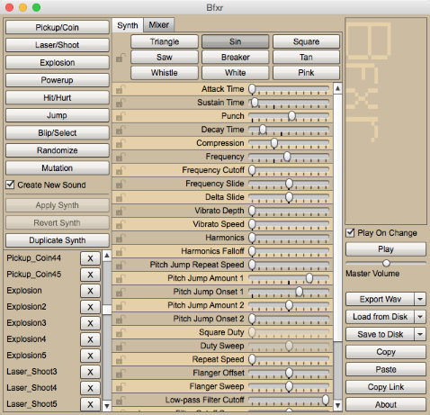
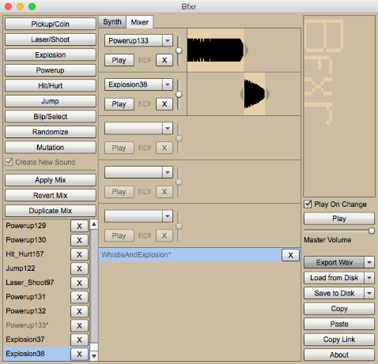
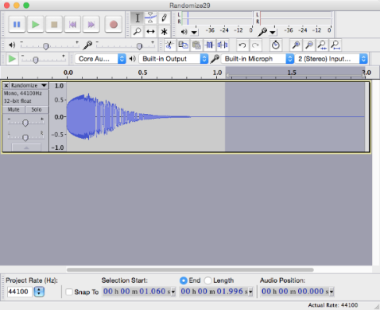

quisseh
Hi there. My name is quisseh.I make software, especially video games.
Lo-Fi Fun with Bfxr
A beginners tutorial on sound effects with Bfxr
Sound design doesn't have to be so scary for game developers.
Bfxr is a brilliant little tool (created by Stephen Lavelle aka increpare) that enables just about anyone to make sound effects for their games. It's also completely free to use.
It manages to be simple enough to use for a complete beginner (like me), yet complex enough to satisfy the creative needs of a sound designer.
I really enjoyed using it while making the sound effects for quisseh&mawia, so I decided to write this beginners tutorial and share my experience.
(Note that this tool produces lo-fi samples, which are probably best suited for retro style games. If you're looking for higher quality and a lot more freedom, you might want to give GarageBand or even Reason a try.)
Getting started
This is Bfxr.
To access Bfxr, go to the Bfxr website. From there, you can either run the tool in your browser, or download it as a standalone application for Mac or Windows. (I prefer the standalone version, since it holds onto all of your sound clips indefinitely.)
Now when I first started, I clung to the upper-left corner of the screen and avoided all of the fancy buttons and levers down the middle. Here you're given plenty of options, many of which can be found useful for any type of game: Pickup/Coin, Laser/Shoot, Explosion, Powerup, Hit/Hurt, Jump, and Blip/Select.
If you're not entirely sure what kind of sound you're looking for, just click the Randomize button until something catches your ear.
As you're generating new sounds, you'll notice that you're building up a queue of sound clips on the lower-left corner of the screen. Click on any of them or press the Play button on the right side of the screen to play the selected sound. Compare and contrast to see which sounds you like best.
Getting into it
By now you've probably come up with a few sounds you really like, but they're just missing a little something.
Well there are a few tweaking methods you can use to solve that problem.
- Mutating
- Changing wave types
- Nitty-gritty lever adjustments
Mutating
Let's start with mutating. Clicking the Mutation button will produce a slightly altered version of the highlighted sound. Sometimes this is all you need to achieve your desired sound.
(Note that repeatedly clicking the Mutation button will actually mutate already mutated versions of the original sound. To always create a mutation of the original, you will have to click on the original again before creating another mutation.)
One suggestion: while you're mutating sounds, pay attention to the adjustments that are automatically being made to the levers down the middle of the screen. This will give you audible hints as to what each lever does. This is how I started making connections between different levers and different sounds, which can be really helpful if you want more control.
Changing wave types
Up next is changing wave types. Along the upper-middle section of the screen, you have a choice of 9 wave types. Selecting a different wave type can dramatically change your sound. Some are better suited for certain types of sound effects than others.
Here are my thoughts on each of them.
- Triangle: Seems to soften, neutralize, and tone down. I've had the most luck using this for making unintrusive menu sounds.
- Sin: Louder and cleaner sounding than Triangle. Useful for any type of sound effect.
- Square: More intense than Sin. More of a retro feel compared to the other options. Very well suited for jump sounds.
- Saw: Never found a practical use for this. This just sounds like Square but dirtier.
- Breaker: Almost indistinguishable from Triangle. Perhaps a bit cleaner.
- Tan: This seems to ruin every sound I throw at it.
- Whistle: Similar to Sin but with an additional, slightly muted wave playing in the background. Produces some interesting results. Good for laser sounds.
- White: Harsh, piercing noise. Suitable for explosions or hit sounds, but I prefer Pink.
- Pink: Less shrill than
White, with more depth. Every explosion sound I made with White ended up sounding better in Pink.
Making changes here actually modifies the original sound itself; it does not create a new sound for you like mutating does. To save your changes, click Apply Synth. To undo your changes, click Revert Synth. You can also duplicate any of your sounds with Duplicate Synth (which can be useful when testing out a bunch of different effects).
Nitty-gritty lever adjustments
Finally, there are the nitty-gritty lever adjustments. These can be tough to understand at first, but once you have a grasp of them they can be very powerful.
I'll discuss the ones I have found to be most useful.
- Attack Time: Time from when the sound begins to when it reaches its first peak. Increase to make that period longer, decrease to make it shorter. Higher attack seems to lessen the effect of Punch.
- Decay Time: Time taken for the sound to fall from its initial attack. Again, increasing makes this longer, decreasing makes it shorter.
- Sustain Time: Time taken to sustain the sound once it is finished decaying. Increase to make longer, decrease to make shorter.
- Punch: Turning this up gives the sound an immediate pop. Useful for shooting, explosion, or hit sounds.
- Compression: Increasing this makes the entire sound stand out much more. Too much can compromise quality, though.
- Frequency: Musical note your sound will begin at. Nudging this by .01 in either direction seems to increment or decrement your sound by one note.
- Frequency Slide: Direction your sound will head in over time. A value of 0 will maintain a constant frequency (good for menus). Less than 0 means frequency will fall (good for shooting sounds). Greater than 0 means frequency will rise (good for jumping sounds).
- Frequency Cutoff: Highest or lowest frequency your sound will reach as it changes over time. If you don't like the note your sound ends on, you can fix that here.
- Vibrato Depth: Use in conjunction with Vibrato Speed to make your sound shiver (vibrate). Really useful for fancy laser sounds. (Turn both up past .5 to see what I mean.)
- Square Duty: Changes the ratio of highs to lows on the Square wave. Use in conjunction with Duty Sweep to change direction. (I like turning both down to their minimums for jumping sounds.)
- Repeat Speed: Repeats your sound at various speeds. Good for lasers, sirens, and powerups.
- Bit Crush: Creates a really unique sound through distortion. Use in conjunction with Bit Crush Sweep to change direction. You can make some outrageous explosions with this. Definitely worth playing around with.
That should be more than enough to get you started.
Mixing
You can use mixing to combine multiple sounds into one clip. At the upper-middle section of the screen, select the Mixer tab.
From here you can select up to 5 sounds to combine. Choose your sounds from the drop down lists, then slide your sounds along the scale to the right to set the order. You can even set the volume of each individual sound.
One of the nicest uses I've found for this is to concatenate sounds that would work well in sequence. For example, I can take the whistling sound of a bomb as it falls from the sky, and add an explosion sound to the end of it (which is what I did in the screenshot above).
Saving your masterpiece
You're probably done tweaking by now, so it's time to save your sound.
To export your sound as a WAV file to use in your game, click the Export Wav button and save it to your local disk.
If you plan on modifying your sound in Bfxr again at a later time, you can also click the Save to Disk button to save your sound in the bfxrsound format. Later on, you can go to Load from Disk to import the file back into Bfxr and continue working.
One step further with Audacity
There's one last thing I can share on this topic: modifying your WAV files with Audacity (another free tool).
There is a great deal of functionality within Audacity, much of which can be useful even at the novice skill level. Here are just some of the features it provides that can help you with your Bfxr sounds.
- Advanced editing and mixing with copying, cutting, and pasting
- Noise removal
- Exporting to different file formats, such as AIFF, MP3, OGG, FLAC, WMA, AAC, and more
- Adjustments to pitch, tempo, and sampling rate
I sought out Audacity to solve one particular issue I was having with Bfxr: little hidden sounds at the end of my clips. After exporting to WAV, I noticed my clips would play empty sound seconds after the audible sound was finished. So I used Audacity to clean this up.
Here is an example.
This is a shooting sound I created in Bfxr and loaded into Audacity. As you can see in the dark gray selected area to the right, from 1.060 seconds to 1.996 seconds there is no audible sound playing at all, yet it remains in the file. This is nearly one second of wasted play time. This will make the sound file larger and your sound engine do more work.
So all you need to do to clean this up is select the area you would like to remove, delete it, and export the new sound. Easy to do, and worth the effort.
Wrapping up
If you made it this far, thanks for reading! I hope this helped you get started on making sound effects with Bfxr. If you have any questions, leave me a comment below.